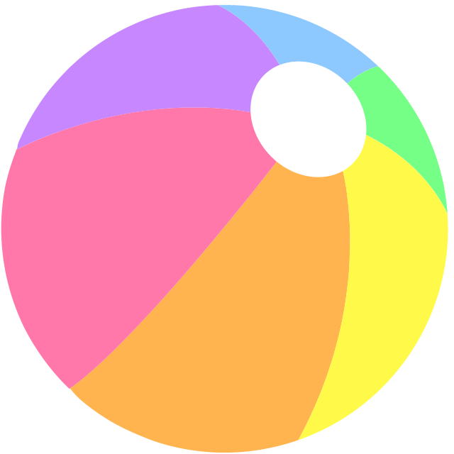

1. Falling
Bolden falder konstant fra oven.
Bolden falder konstant fra oven.
Bolden hopper op og ned.
Bolden falder ned, og bliver liggende.
Bolden bevæger sig i et fast mønster.
Bolden bliver lillebitte.
Bolden bliver kæmpestor.
Bolden fader langsomt væk.
Bolden fader langsomt ind
Bolden drejer rundt
Bolden drejer rundt om et punkt uden for sig selv.
Bolden "lyser op" - brug en filter-effekt.
Bolden triller fra side til side (kombinér to transform funktioner), og den bliver gråtone og sløret (kombinér to filter-effekter).
Bolden "pulserer" stille og roligt for at gøre opmærksom på at man skal klikke på den.
Bolden triller lidt for langt, før den ender på rette plads. Brug en cubic-bezier timing-function.
Bolden falder ned, hopper lidt op igen og igen, indtil den falder
til ro.
Start med at lave et mønster med keyframes hvor bolden bevæger sig
fra toppen til bunden, lidt op, til bunden, lidt mindre op, til
bunden, og så fremdeles.
Til sidst kan du tilføje flytten fra venstre mod højre og rotation i
kun den første og sidste keyframe.
Bolden bevæger sig i et fast mønster, ligesom i nr. 4, men hver gang den rammer en kant, bliver den lidt mast. Du får brug for en masse ekstra keyframes med transform-ændringer!